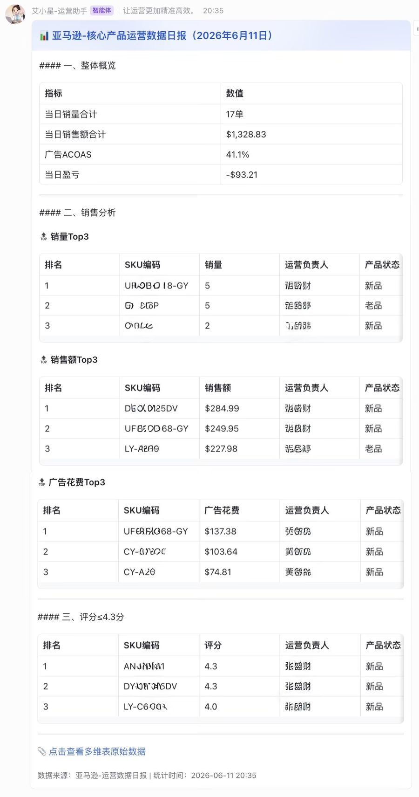

1. 项目战略定位：为什么出海企业需要定制化日报数据管道？
在亚马逊（Amazon）高强度的全球店铺运营中，销量、销售额、广告投入和产品质量评分等核心指标直接构成了企业的利润生命线。传统的运营报表高度依赖人工跨表格整合（如手动执行 VLOOKUP 对齐日报数据与后台销售负责人表），这往往会导致严重的时效滞后与管理盲区：
| 商业维度 | 人工表格统计 / 传统固定报表 | 本案交付：OpenClaw 运营数据日报管道 |
|---|---|---|
| 数据对齐效率 | 耗时易错（需人工跨多表手动匹配 SKU 与对应运营负责人） | 智能主键映射（自动构建 SKU-Owner 关系网，空值自适应补充） |
| 时效与触发 | 严重断层（依赖人工白班收集汇总，隔天才能产出滞后报表） | 全天候无感运维（支持每日 Cron 定时触发，分钟级流水线推送） |
| 信息穿透粒度 | 数据堆砌（管理层面对数千行流水账，难以快速抓出核心爆款及问题） | 核心焦点穿透（自适应 Top3 销量/销售额/广告排序 + 4.3 分低评分红线拦截） |
| 协同流转成本 | 分布式流转（发送各种 Excel 文件，沟通路径冗长零散） | 飞书卡片微端（支持原生 tag:table 渲染，直达核心决策群群聊） |
作为前沿部署工程师（FDE），本方案的核心使命不仅在于编写一个简单的自动化脚本，而是深度下沉到跨境出海企业的核心业务链路中，用工业级的工程能力将多维表格（Bitable）底层接口、多维异构数据清洗与飞书协同办公无缝闭环，将代码的技术深度彻底转化为驱动业务敏捷决策的数字化齿轮。
2. 场景破局：三层级高内聚数据管道设计
本系统放弃了笨重的单体软件架构，在设计理念上契合了高内聚、轻量化的解耦哲学，将整个日报流处理流程划分为以下三层结构：
- 上游：分布式多表数据拉取流（Multi-Table Ingestion）
系统底层通过接入飞书开放平台多维表格 REST API 矩阵，精准对齐TABLE_ID_DAILY（运营数据日报表）与TABLE_ID_SALES（Sales Analysis 负责人主表）。利用page_token机制设计了健壮的分页拉取算法，能够高鲁棒地抓取单表全量超万条记录，无视数据规模瓶颈。 - 中游：高能多维聚合与降噪排序引擎（Data Cleaning & Aggregation）
核心分析引擎不提供死板的原始字段映射，而是融入了高适应性的数学解析：自动清洗各类国际化货币符号（$、¥、,），全盘动态聚合出“当日销量合计”、“当日销售额合计”、“全盘广告 ACOAS”，并自动根据净利润正负切换“净毛利/净亏损”状态标签。同时，引擎在内存中对所有 SKU 进行高性能切片排序，精准提炼销量、销售额、绝对广告花费 Top3 的商品队列，并针对性红线捕捉“质量评分 ≤ 4.3”的高危 SKU。 - 下游：飞书交互式富文本卡片引擎（Lark Interactive Portal）
下游基于飞书异步网关，动态构建高度结构化的富文本 interactive 卡片。彻底淘汰了极易被漏读的传统纯文本信息，将清洗完成的四大统计阵列以飞书卡片专用的tag:table组件优雅灌注呈现，不仅附带产品状态与负责人属性，还嵌入了DATA_LINK数据链路，实现“看板看大局，一键穿透查细节”。
3. 工业级工程鲁棒性：捍卫生产安全的五大技术壁垒
临时性的脚本在面对复杂的网络波动与多表复杂字段时，极易因“字段空值、长尾超时”等问题发生崩溃。本系统在底层设计了金融级健壮性的抗脆弱结构：
- 外部沙盒环境变量隔离： 系统的核心安全资产凭证（如飞书通信密钥、目标 Chat ID、表 ID 矩阵）严禁硬编码在代码内。外层引入了
.feishu_env环境配置文件进行严格的沙盒隔离，在入口处进行强校验，从源头绝杜绝商业机密外泄。 - 令牌凭证无感自刷新： 针对飞书 Tenant Access Token 的时效限制，内置了状态管理器，在进行主 API 交互前自动发起
internal凭证自刷新，确保自动化流水线永不断线。 - 网络抗震与指数退避： 针对跨国网络偶发的网络抖动或平台接口延迟，网络通信层集成了最大 3 次的指数退避重试保护（Max Attempts = 3），网络请求超时阈值严格锁死在 15 秒，坚决杜绝僵尸进程常驻和线程挂起。
- “零异动”绿色安心兜底机制： 当遇到突发情况导致今日数据源为空时，系统坚决不引发死锁报错，而是会贴心地调用红字告警看板（
send_empty_notification），提示管理层快速排查上游数据更新状态，保证系统永远具有“确定的系统状态反馈”。 - 敏捷开发沙盒模式（--dry-run）： 方案优雅实现了命令行迭代开关。在追加 `--dry-run` 参数时，脚本会自动切断对线上真实群聊的 Feishu API 请求，而是直接在控制台终端将序列化后的卡片 JSON 结构高亮打印输出（stdout），完美做到了研发与生产环境的无污染隔离。
📈 数字化交付量量化收益看板 (ROI KPI)
本运营数据日报管道在企业核心出海业务群上线运行后，为跨境客户交付了极其显著、可量化的核心商业回报：
-95%
手工多表汇总时间
100%
低分/高广告费SKU追溯率
0次
凭证泄露 / 字段死锁崩溃
4. 多维微端看板：卓越的用户体验（User Experience）
系统推送的每日监控看板在视觉与产品逻辑上严格遵循“重点突出、动静分离”的原则，大幅减少管理层的检索耗时：

图：由核心管道组件自动生成的飞书多维交互式运营日报微端看板（生产环境真实渲染）
- 📊 整体核心概览区： 置顶展示。高度聚合当日总销量（单）、总销售额（$），自动计算全盘综合广告 ACOAS，并依据净毛利正负智能切换“净毛利/净亏损”红蓝状态展示。
- 🔝 核心指标 Top 3 焦点区： 纵向切分三大核心战术指标——销量、销售额、广告花费，各自提取Top3高光/高危SKU，透传产品状态并自动追溯匹配运营负责人，便于管理层一秒抓住核心矛盾，精准施策。
- 📉 品质安全预警区（评分≤4.3分）： 自动红线拦截评分低于或等于4.3分的在售SKU，提示运营负责人及时进行售后干预；若全局质量安好则优雅输出“无异常”兜底。
- 📎 原始数据一键穿透： 卡片底部直接附带多维表原始数据随航锚点，点击可一键穿透回多维表格最底层，实现“看板看大局，一键查细节”的敏捷协同。
5. 数字化转型背书
“作为年销售额千万美金规模的跨境品牌，我们过去每天要耗费数名助理运营去各个店铺导数据、做 VLOOKUP 跟销售负责人对齐。这套由 FDE 交付的亚马逊核心数据日报管道彻底解决了痛点。现在全公司管理层和运营每天定时在飞书群收到一张极致精炼的卡片，不仅大盘数据一目了然，连 Top 3 爆款和低于 4.3 分的异常链接都被精准揪了出来，配合负责人自动匹配，责任直接到人。这是我们近年来最成功、投资回报率（ROI）最明显的自动化智能化转型投资。”
—— 某头部出海品牌 联合创始人兼首席运营官（COO）
← 返回日志列表
—— 某头部出海品牌 联合创始人兼首席运营官（COO）